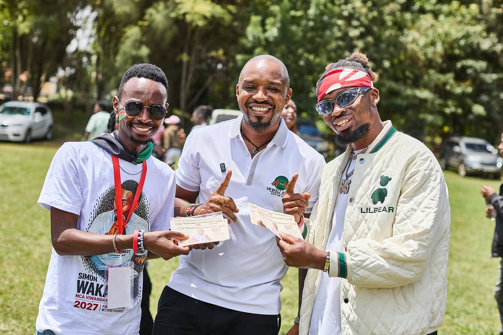

Ukweli Party is a social democratic national political organization and movement of diverse citizens, working together towards a Kenya that is governed democratically and competently.
Ukweli Party
Nguvu kwa mwananchi
The goal of our political work is to urgently install in government and state power a pro-people social, cultural, political and economic system that guarantees all Kenyans social justice, freedom, dignity and happiness.
We believe that Kenya has everything that is needed to build a united nation of free, equal, prosperous citizens, at peace with one another in all our diversity. The defeat of the backward, extractive, violent and anti-people ruling networks is a prerequisite for our country to realize its full potential as a modern democratic society.
Ukweli Party shall work tirelessly to serve our country through the exercise of governance and political leadership as a patriotic national service. We aspire to provide national and county government leadership and management of public affairs that shall truly serve the people of Kenya and inspire a national ethos of integrity, fairness, respect for diversity, rule of law and social justice.



Photos from recent party activity across Nakuru, Kisii, and Nyamira.
Our party symbol
Our official party symbol is two hands holding a bandana against a black and green circle: hands that work, a bandana that binds, and green for the land our forebears fought for.
Earlier materials used the green sugarcane. The cane remains part of our story. It represents the land and the sweetness of freedoms won by our forebears. The 2026 Party Constitution sets the bandana as the symbol of record.


Join the movement
It is now easy to verify your party membership status, join, or resign from a political party using your phone or online.
Phone: Dial *509# and follow the prompts.
Online: Log on to ippms.orpp.or.ke and register, or log in with your eCitizen account.
Should you have any issues, please send us a WhatsApp message on +254 799 973 889.